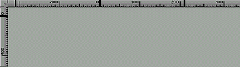

<!-- Documentation Xclamation (c)1994-2000 AXENE contact axene@axene.org>
<html>

<head>
<title>Rulers</title>
</head>

<body BGCOLOR="#FFFFFF" BACKGROUND="Images/back.gif" TEXT="#000000">

<p ALIGN="right"> </p>

<p><br>
<br>
Rulers measure the desktop both horizontally and vertically. <br>
<br>
</p>

<hr>

<p align="center"><br>
 <br>
<small><i>Screen shot: Document rulers. </i></small></p>

<p><br>
</p>

<hr>

<p><br>
</p>

<h2>Measurements</h2>

<p>The graduation of ruler measures is adjusted according to the enlargement factor of the
view. Measurements are always expressed in millimeters. </p>

<p><b>Division of the work space</b>. 

<ul>
  <li>Vertically, space is divided into three sections: <br>
    &nbsp;<ul>
      <li>the first section above the page. <br>
        &nbsp;</li>
      <li>the second, within the page. <br>
        &nbsp;</li>
      <li>the third, beneath the page. <br>
        &nbsp;</li>
    </ul>
  </li>
  <li>Horizontally, space is divided into three sections: <br>
    &nbsp;<ul>
      <li>the first section, to the left of the page. <br>
        &nbsp;</li>
      <li>the second, within the page. <br>
        &nbsp;</li>
      <li>the third, to the right of the page. <br>
        &nbsp;</li>
    </ul>
    <p>There are four horizontal sections when the page displayed as a double-page, because
    the section within the page is divided in two: half is the left page and half is the
    right. </p>
  </li>
</ul>

<p><br>
</p>

<h2>Origin</h2>

<p>The user may <b>move the rulers' origin</b> within each zone (intersection of a
horizontal and vertical section), by clicking with the left mouse button in the square
area at the intersection of the two rulers, and, holding the mouse button, then moving the
cursor inside a zone. To place the new origin, release the mouse button. Click the right
mouse button to annul the operation in progress. </p>

<p>To <b>restore the default placement of all origins</b>, click the middle mouse button
in the square area at the intersection of the two rulers. </p>

<p><br>
</p>

<h2>Alignment Lines</h2>
<b>

<p>Alignment lines may be pulled</b> from the two rulers onto the display screen,
horizontal lines from the horizontal ruler and vertical lines from the vertical ruler.
These green lines are magnetic, aiding in the precise positioning of frames. To place
these alignment lines, click and hold the left mouse button on one of the two rulers, move
the mouse cursor to the display screen, and release the mouse button. To annul the
operation, click on the right mouse button before releasing the left button. Depending on
whether the alignment line is placed either inside or outside the page, the line will
stretch from one side of the page to the other, or from one side of the display screen to
the other. </p>

<p>Alignment lines may be moved or deleted once placed on the display screen. <b>To move
an alignment line</b>, bring the cursor near a green line then click and hold the left
mouse button, move the line within the display screen, and release at the line's new
location. <b>To delete an alignment</b> line, take the line as if moving it and release it
outside the display screen once the image of the line is no longer visible. Again, it is
possible to click the right mouse button while in transit to annul the operation. </p>

<p>Alignment lines can be displayed or hidden from the <a
HREF="Menu_View.html#ruler_marks_menu_entry"><i>&quot;View&quot;</i> menu</a>. </p>

<p><br>
</p>

<hr>

<p ALIGN="right"></p>
</body>
</html>
